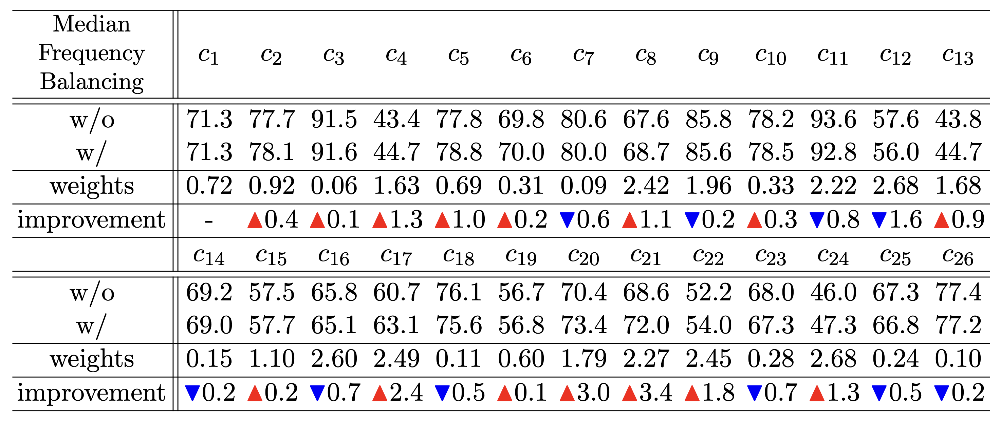
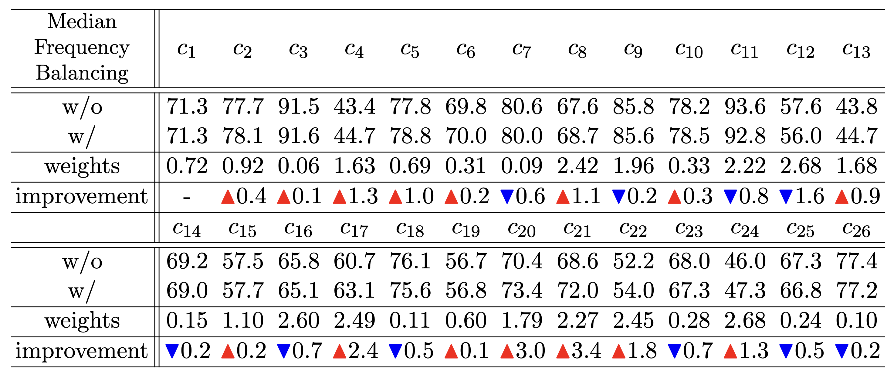

Obstacle Detection on Road based on Deep Learning
 

담당 역할
- AIHub 데이터셋 다운로드 및 전처리
- YOLOv7 학습을 위한 환경 구축
- Class Imbalance 해결 및 성능 개선을 위한 Method 연구
- 모델 학습 및 결과 분석, 하이퍼파라미터 튜닝
데이터셋 및 성과
- person, car, bus, truck, bicycle, motor cycle 등 26개 클래스 탐지
- mean Average Precision 68.7
회고
- Problem 1. Data Class Imbalance
- Label이 많은 클래스에 대해서는 Under Sampling, 적은 클래스에 대해서는 Over Sampling을 수행
- Median Frequency Balancing을 이용해 mAP 0.4 개선
- Problem 2. 오래 걸리는 학습 시간
- 이미지 사이즈를 1920, 1080에서 letter box를 이용해 640, 360로 줄인 후 저장해 학습 데이터로 사용
- npy format을 이용해 학습 시간 5~10% 감소
- Problem 3. 낮은 성능
- Focal Loss, Quality Focal Loss, VariFocal Loss를 classification, objectness loss로 사용해 실험
- GIoU, DIoU, CIoU를 bounding box regression loss로 사용해 실험
- 그 결과 VariFocal, CIoU를 사용한 것이 다른 실험보다 2~3 mAP 개선하며 68.7 mAP 달성
시기 및 사용 기술
- 진행 기간: 2022.09.01 ~ 2023.04.30
- 인원: DL (1)
- 사용 기술: PyTorch
- 모델: YOLOv7